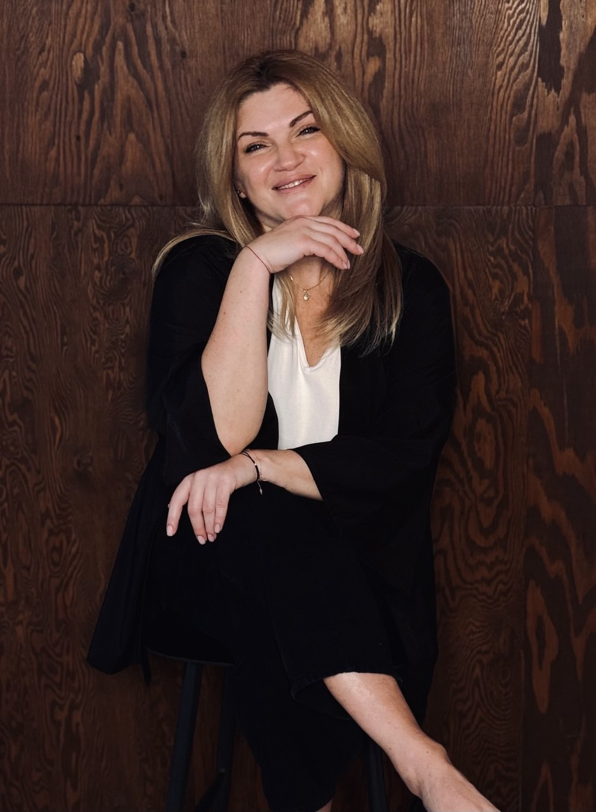
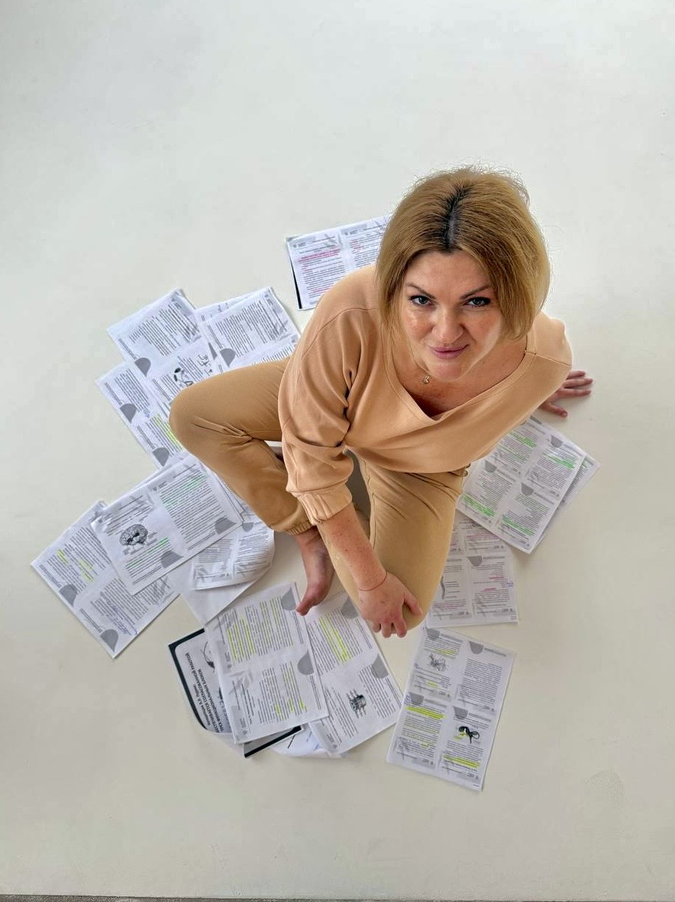

Как ты сейчас?
ПРИВЕТ, Я – Полина Киселёва!ТВОЙ ПСИХОЛОГ-КОНСУЛЬТАНТ



КАК ТЫ СЕЙЧАС?
Отметь всё, что тебе откликается, и нажми «Дальше».
ДАВАЙ НАЙДЕМ ОТВЕТЫ ВМЕСТЕ!
ДальшеФормат работы и стоимость
Встречи онлайн/Оффлайн (Крым, Симферополь)
ВАЖНО: Сейчас я не работаю с ПТСР, с подростками (младше 18 лет), зависимостями и психиатрическими диагнозами
Первая сессия - «Знакомство» - 30 минут/Бесплатно (в онлайн формате)
Следующие три сессии по специальной стоимости – 1500 руб (онлайн)/ 2000 руб (в кабинете) - 50 минут
С пятой сессии - 2000 руб (онлайн)/ 2500 руб (в кабинете) - 50 минут
Как тебе будет комфортнее? Обсудим при Знакомстве.
ТУТ МОГУТ БЫТЬ ОТВЕТЫ НА ТВОИ ВОПРОСЫ:
Вот подборка самых частых страхов и вопросов, с которыми Ты возможно уже столкнулся (лась) перед первой сессией.
Почему первая встреча короткая и бесплатная?
Все логично и просто, первая сессия – наше знакомство. Это ознакомительный формат (обычно 30 минут), чтобы мы могли познакомиться, обсудить Твой запрос и понять, комфортно ли нам будет работать вместе. Это ни к чему Тебя не обязывает, но помогает безопасно сделать первый шаг и снять напряжение перед началом нашей работы.
Вдруг психолог осудит меня за мои мысли, слабости или поступки?
Наше пространство — это пространство абсолютной безопасности и конфиденциальности. Здесь нет оценок «хорошо» или «плохо», «правильно» или «стыдно». Я рядом не для того, чтобы оценивать, а чтобы понять Тебя и помочь.
С чего начинать первую встречу, если я даже не знаю, как сформулировать проблему?
Совершенно нормально прийти без «диагноза» или четкой формулировки запроса. Достаточно начать говорить. Можем начать с того, что болит или тревожит прямо сейчас. Я помогу бережно распутать этот внутренний клубочек.
Мне страшно и стыдно открывать душу незнакомому человеку.
Отношения «психолог/клиент» - это тоже отношения. Доверие строится постепенно, и это абсолютно естественно. Ты сам (а) управляешь темпом и глубиной разговора — можно делиться ровно тем, к чему Ты готов (а) сегодня. Я не буду торопить и давить, но постараюсь быть мягко-честной и бережно подсвечивать то, что могло остаться не замеченным.
А вдруг после сессии мне станет хуже, поднятые темы ранят меня?
В терапии действительно могут подниматься глубокие, скрытые чувства, и в моменте может быть грустно или тяжело. Это нормальная и важная часть проживания опыта. Рядом будет бережный проводник - Я, который поможет справиться с эмоциями и вернет ощущение опоры. Я не оставлю Тебя в этом, для этого я тут.
А вдруг мне вообще не поможет, и я зря потрачу время и силы?
Психотерапия — это совместная работа и путь навстречу себе. Результат зависит от нашего контакта и готовности к изменениям. И даже если Ты заметишь сопротивление («психолог меня злит» и/или «не хочу идти на сессию/забыл о ней») или сомнения, их тоже можно и нужно обсудить на сессии — это важный шаг в терапии и отличная точка для роста.
Тут обязательно знать! – «хочешь уйти из терапии/злит или раздражает психолог?», или наоборот, «так не хочется говорить ему правду, лучше промолчу»? - скажи мне об этом! Это тоже важно! мы обсудим это вместе без осуждения и решим, как сейчас было бы лучше для именно Тебя.
Сколько сессий понадобится, чтобы решить мою проблему?
Тут всё очень индивидуально, ведь особенности психики у каждого свои, кто-то готов к быстрым решениям и переменам, ии, например, запрос не глубок и не требует глубинной проработки, тут может стать достаточным провести нескольких встреч и получить ясность. Для кого-то запрос связан с глубинными изменениями, они требуют больше времени для исследования и готовности к этому и тут мы будем двигаться бережно, ровно туда, где Ты уже готов (а), в моменте «здесь и сейчас». Важно то, что мы точно будем знать к чему и зачем идем.

НЕМНОГО ОБО МНЕ:
Обучение в Московском Институте Психологии (МИП), сертификат на 50 часов практики, личные часы терапии, регулярные посещения супервизий и интервизий у опытных наставников